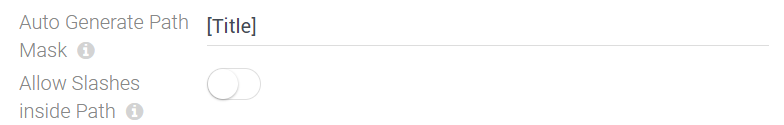

Field Input-Type string-url-path
Use this field type to manage url-paths which you'll usually use to identify an item. For example, if you have a blog and each post has a url with the name, this is the field that you need to match the url to the item. It stores a string/text data. It's an extension of the basic string field type.
Features
- ensure that only url-safe characters are used
- automatically generate a url based on one or many other fields when editing the first time
- keeps the generated url stable later on
- also allows manual editing if needed
Configuring a String-Url-Path
This shows the configuration dialog:
- Auto Generate... here you can build a template how the url should be auto-generated
- Allow Slashes this let's you choose if slashes are desired in this url-fragment - in most cases you don't want slashes
Read more
- Read this post & watch the video when we introduced it
History
- Introduced in EAV 4.0 2sxc 8.3